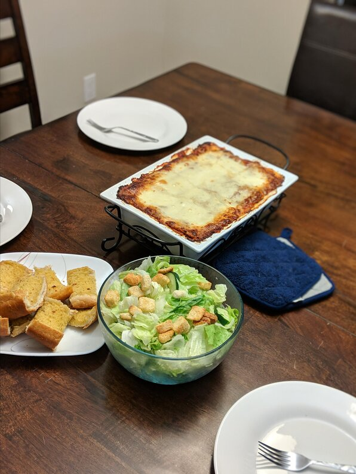

kARAAGE

Decription
TChicken karaage lovely
Ingredients
- ¾ pound mozzarella cheese, sliced
- ¾ cup grated Parmesan cheese
Steps
- Preheat oven to 375 degrees F (190 degrees C). Bring a large pot of lightly salted water to a boil. Add noodles and cook for 8 to 10 minutes or until al dente; drain and set aside.
- In a 9x13 inch baking dish, place 2 layers of noodles on the bottom of dish; layer 1/2 of the cheese mixture, 1/2 of the mozzarella cheese and 1/2 of the sauce; repeat layers.